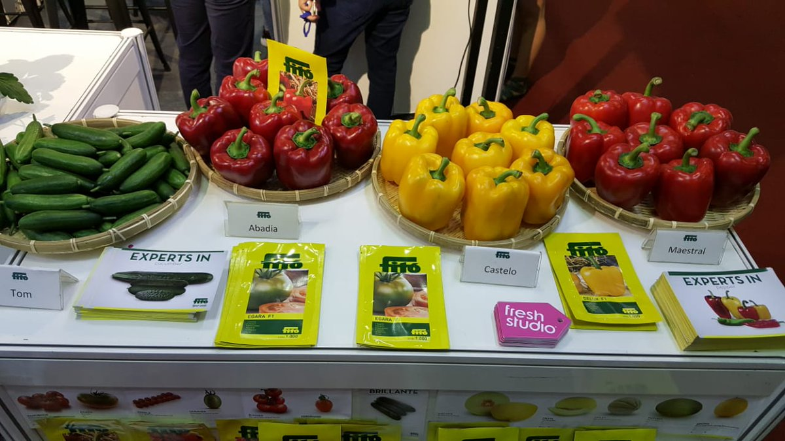

WELCOME TO KAGEYO SECTOR

Agricultue in rural areas
In Rwanda particularly, population in rural areas depend largely on agriculture for their livelihoods. Agricultural growth is therefore a key to poverty reduction and economic growth as well as a driver of national economic development.

agricultural industry
Agricultural sector general information The agricultural sector accounts for 33% of the national GDP . In general, Rwanda's GDP has been growing at the rate of 7% since 2014. Tea and coffee are the major exports while plantains, cassava, potatoes, sweet potatoes, maize and beans are the most productive crops

To fight poverty effectively Rwanda strengthnes agri-food processing
To fight poverty effectively Rwanda strengthens agri-food processing. Transform the agricultural sector to evolve into commercial agriculture; this is the objective pursued by the Rwandan state. This should enable the country to balance its trade balance and effectively fight against poverty.
IKOFI'S a bank of kigali innovation to boost agricultural practices
Now for the first time with IKOFI, farmers have an opportunity to create a digital financial track record that will be used by of Bank of Kigali to decide on their credit eligibility by doing things they do and have been doing anyway, such as receive payment when selling portion of the harvest, send and receive money, and very soon health care and other services. dialling *334*2#